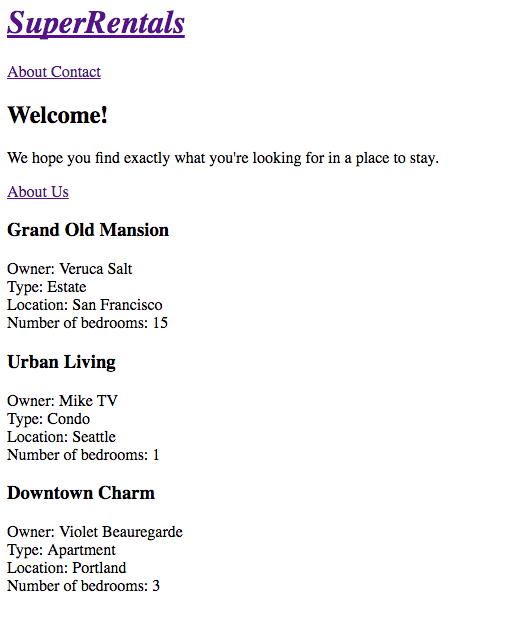

モデルフック 編集
先程作成した物件一覧ページに利用可能な物件を表示しましょう。
Emberは、modelと呼ばれるオブジェクトにページのデータを保持します。
最初は物事を単純にするため、物件一覧ページのモデルにJavaScriptオブジェクトの配列をハードコードします。
その次に、アプリでデータを堅牢に管理するためのライブラリであるEmber Dataの使用に切り替えます。
次のようになります。

Emberでは、ルートハンドラがページのデータをモデルにロードします。
modelと呼ばれる関数で行います。
model関数は、その時々において実行されるフックです。
rentalsルートハンドラに追加したモデル関数は、ルートURLhttp://localhost:4200またはhttp://localhost:4200/rentals経由でレンタルルートにナビゲートすると呼び出されます。
app/routes/rentals.jsを開き、model関数から物件オブジェクトの配列を返しましょう：
| app/routes/rentals.js | |
1 2 3 4 5 6 7 8 9 10 11 12 13 14 15 16 17 18 19 20 21 22 23 24 25 26 27 28 29 30 31 32 33 34 |
import Route from '@ember/routing/route'; export default Route.extend({ model() { return [{ id: 'grand-old-mansion', title: 'Grand Old Mansion', owner: 'Veruca Salt', city: 'San Francisco', category: 'Estate', bedrooms: 15, image: 'https://upload.wikimedia.org/wikipedia/commons/c/cb/Crane_estate_(5).jpg', description: 'This grand old mansion sits on over 100 acres of rolling hills and dense redwood forests.' }, { id: 'urban-living', title: 'Urban Living', owner: 'Mike TV', city: 'Seattle', category: 'Condo', bedrooms: 1, image: 'https://upload.wikimedia.org/wikipedia/commons/0/0e/Alfonso_13_Highrise_Tegucigalpa.jpg', description: 'A commuters dream. This rental is within walking distance of 2 bus stops and the Metro.' }, { id: 'downtown-charm', title: 'Downtown Charm', owner: 'Violet Beauregarde', city: 'Portland', category: 'Apartment', bedrooms: 3, image: 'https://upload.wikimedia.org/wikipedia/commons/f/f7/Wheeldon_Apartment_Building_-_Portland_Oregon.jpg', description: 'Convenience is at your doorstep with this charming downtown rental. Great restaurants and active night life are within a few feet.' }]; } }); |
ここでは、ES6の短縮形のメソッド定義構文を使用していることに注意してください。 model()は model: function()と同じです。
Emberは上記で返されたモデルオブジェクトを使用し、 modelという名前の属性として保存します。これは、ルートとテンプレートでルートと一緒に生成したrentalsテンプレートで利用できます。
次に、物件一覧のページテンプレートを開きましょう。
model属性を使用してレンタルリストを表示することができます。
ここでは、{{each}}という別のHandlebarsヘルパーを使用します。
このヘルパーは、モデル内の各物件オブジェクトをループさせます。
上記のコードは、テンプレート内で各オブジェクトをループしています。
ループ毎に渡されるオブジェクトをrentalという変数に格納しています。
rentals変数から物件に関する情報を列挙しています。
新しい機能の実装を続けるには次のページに行ってください。 ここから先は、ここまでで作成した機能のテストの実装です。
物件一覧のアプリケーションテスト
物件一覧が表示されていることを自動テストで確認するために、インデックスルートにアクセスして、3件表示されるかどうかを確認するテストを作成します。
app/templates/rentals.hbsでは、各物件情報をlistingというクラスを持ったarticle要素でラップしました。
listingクラスを使用して、ページに表示される物件数を確認します。
listingというクラスを持つ要素を見つけるために、querySelectorAllというメソッドを使います。
querySelectorAllメソッドは与えられた[CSS selectors(https://developer.mozilla.org/ja-JP/docs/Web/CSS/CSS_Selectors)と一致する要素を返します。
この場合、listingというクラスを持つすべての要素の配列を返します。
| /tests/acceptance/list-rentals-test.js | |
1
2
3
4
5 |
import { click, currentURL, visit } from '@ember/test-helpers' |
| /tests/acceptance/list-rentals-test.js | |
1 2 3 4 |
test('should list available rentals.', async function(assert) { await visit('/'); assert.equal(this.element.querySelectorAll('.listing').length, 3, 'should display 3 listings'); }); |
ember t -sでテストを実行し、"Hide passed tests"を切り替えて、追加したテストがパスしたか確認してください。
物件一覧を表示していることをアプリケーションテストで検証することができました。 これにより、残りの失敗しているアプリケーションテストが2件になりました。(ESLintを加えると3件)